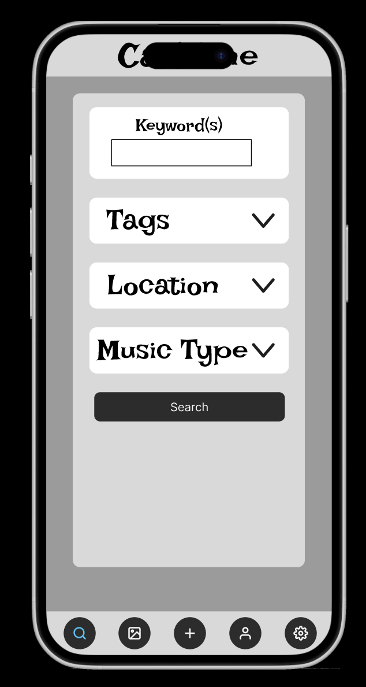

Our team chose to create a tool to address problems with the Carleton music scene: difficulties for students finding people to play music with, problems finding out about available on campus music performances to view, generally strengthening the music community at Carleton.
My team received the following feedback from our final UX evaluation:
I improved on the UX evaluation by:
Images of my final prototype:
You can access my final Figma prototype right here.
1. Events board Based on our transcriptions, it is clear that students find it difficult to find and keep track of events on campus. Both stakeholders mentioned that the main ways to find events is through word-of-mouth or campus posters. This makes it clear that students would benefit from being able to access a streamlined source of information to stay up to date on what opportunities are taking place and when.
2. Musicians board Similar to the events board, there currently is not a reliable way to find other students to play music with. P1 indicates that finding other musicians is primarily done through pre-existing friendships, and P2 indicates that without musical friends, there is little to no opportunity for student musicians to play with others. There is also a wide variety of musical interests students may have that range on a spectrum of casual to serious, and creating a board of musicians’ profiles would allow students to express this nuanced information.
3. Privacy Since we are designing a social media-esque platform, it is important to note that different users may have different levels of comfort with what information they share online. For this reason, we need to consider how to incorporate privacy in our design and allow users to show/hide as much or as little personal information they would like. This is not only important to users, but also events, as some events are open to the public while others are only open to those affiliated with Carleton.
To address each requirement:1. I tooled the main media page to specifically center around postings for on campus events and performances.

2. I created a page for musicians to view the profiles of other people on campus (who chose to make their account public) as a tool for smoother online networking.

3. I created a settings page where users can manage who can see their posts, which posts they can see, and their profile visibility.
You can view the full project right here.